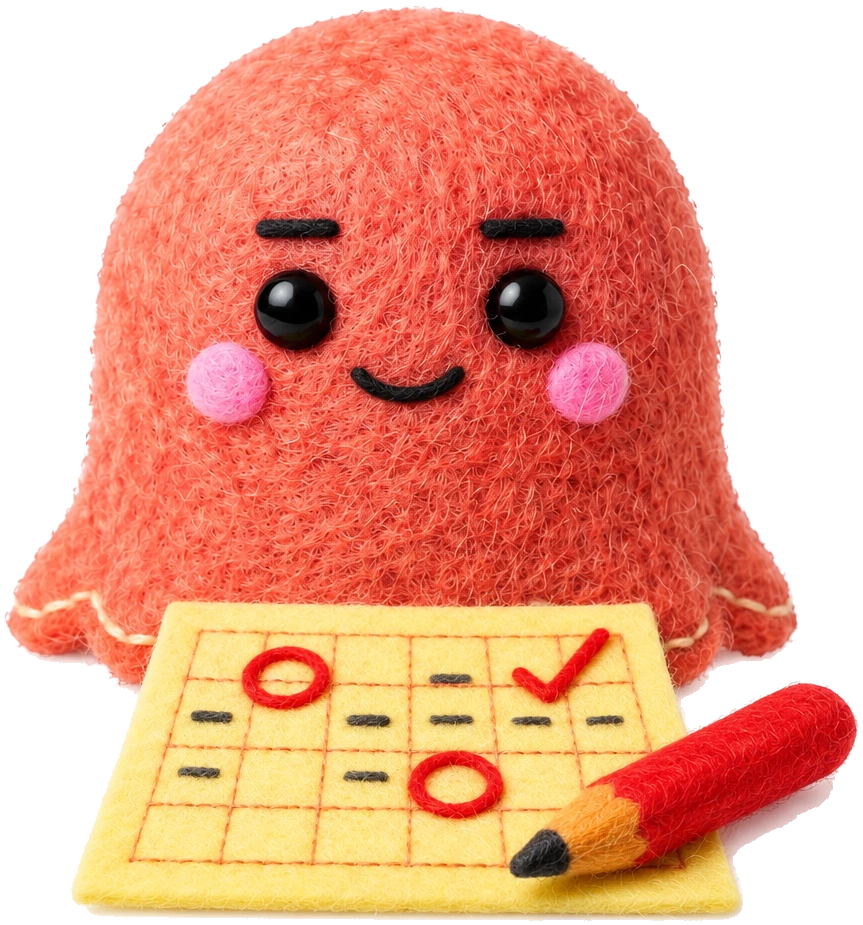
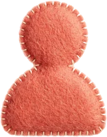
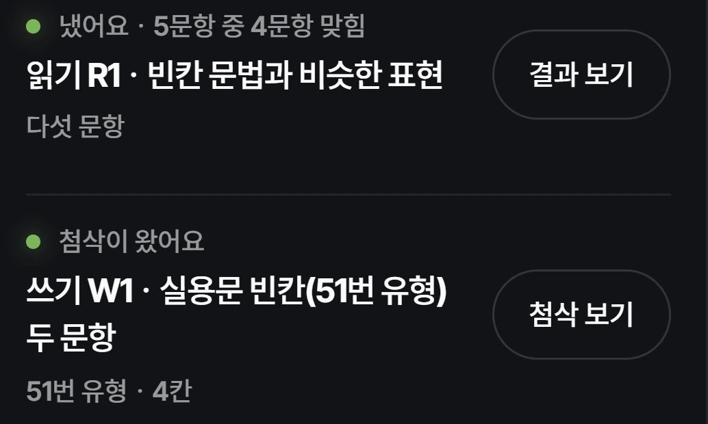

SYNK LABTOPIK II · 4
Төгсөхөд TOPIK 4-р түвшин хэрэгтэй юү?
졸업하려면 TOPIK 4급이 필요해요?
2027 оны 3-р сард эхэлнэ
Долоо хоног бүр бичвэрээ засуулна
Онлайн анги
10 хүн бүрдвэл анги нээгдэнэ

Төгсөхөд TOPIK 4-р түвшин хэрэгтэй юү?
졸업하려면 TOPIK 4급이 필요해요?

Солонгосын их сургуульд сурдаг, төгсөхөд TOPIK 4-р түвшин хэрэгтэй.
한국 대학에 다니고, 졸업하려면 4급이 필요해요.
3-р түвшин авсан эсвэл түүнтэй ойролцоо чадвартай ч бичгийн 51–54-р даалгавар хэцүү санагддаг.
3급 언저리인데 쓰기 51~54번이 막막해요.
Ганцаараа хичээллэхэд бичсэнээ шалгуулах хүн байхгүй.
혼자 하면 내 글을 봐 줄 사람이 없어요.

Хичээлд сууж чадаагүй бол бичлэгээр нөхөж үзнэ.

Туршилтын ангийн дэлгэцийн зураг · «첨삭» — багшийн засвар토 수업 → 수 밤 11시 과제 → 금요일까지 첨삭
Засах шаардлагатай хэсгийг таваас илүүгүй тэмдэглэж, дараагийн бичвэрт хэрэгтэй зөвлөгөөг гурван мөрөөр бичиж өгнө.
Тэмдэглэсэн хэсгүүд
「조사했습니다」
Өгүүлбэрийн төгсгөлийн хэв маяг холилдсон
「63%이」
Нөхцөл буруу
「15% 증가했다」
Үгээ буруу сонгосон
「왜냐하면 … 올랐기 때문이다」
Мэдээлэлд байхгүй зүйл
「2022년 48%였는데 2026년 63%」
Сайн бичсэн хэсэг
Бүртгэлийн хуудсан дээрх жишээ · 53-р даалгавар. Оюутны бичвэрийг жишээнд зориулж зохиосон.신청 페이지의 첨삭 예시 · 53번(학생 글은 예시로 지은 글)
Сайн болсон зүйл
조사 기관과 두 해의 비율을 정확히 옮겼어요.
Судалгаа хийсэн байгууллага болон хоёр оны хувийг зөв бичсэн байна.
Засах гол зүйл
「물가가 많이 올랐기 때문이다」는 자료에 없는 내용이에요. 53번은 자료에 있는 것만 써요.
«Үнэ их өссөн учраас» гэдэг нь мэдээлэлд байхгүй зүйл. 53-р даалгаварт зөвхөн мэдээлэлд байгаа зүйлийг бичнэ.
Дахин бичиж үзэх хэсэг
「2026년 63%이 되었다. 15% 증가했다.」를 「2022년 48%에서 2026년 63%로 15%포인트 증가했다」처럼 한 문장으로 다시 써 보세요.
«2026 онд 63% болсон. 15% өссөн.» гэсэн хоёр өгүүлбэрийг «2022 онд 48% байсан бол 2026 онд 63% болж, 15 нэгж хувиар өссөн» гэх мэтээр нэг өгүүлбэр болгон дахин бичээрэй.
Дахин бичиж үзэх хэсгээ дараагийн долоо хоногийн даалгавартайгаа хамт илгээнэ.다시 써 볼 곳은 다음 주 과제와 함께 내요
Сонсголын дасгалыг өмнөх жилүүдийн шалгалтын материалаар долоо хоног бүр хувааж хийнэ.
첫 반은 2027년 3월 시작 · 10명이면 개강 · 8주 30만 원 · 토요일 가능한 시간은 등록할 때 골라요 · 결제는 개강일이 정해진 뒤
Урьдчилан бүртгүүлэх
Холбоос профайл дээр байгаа.
1 минут л болно. Одоо ямар ч төлбөр авахгүй.
관심 등록 링크는 프로필에 있어요 · 1분이면 끝나요